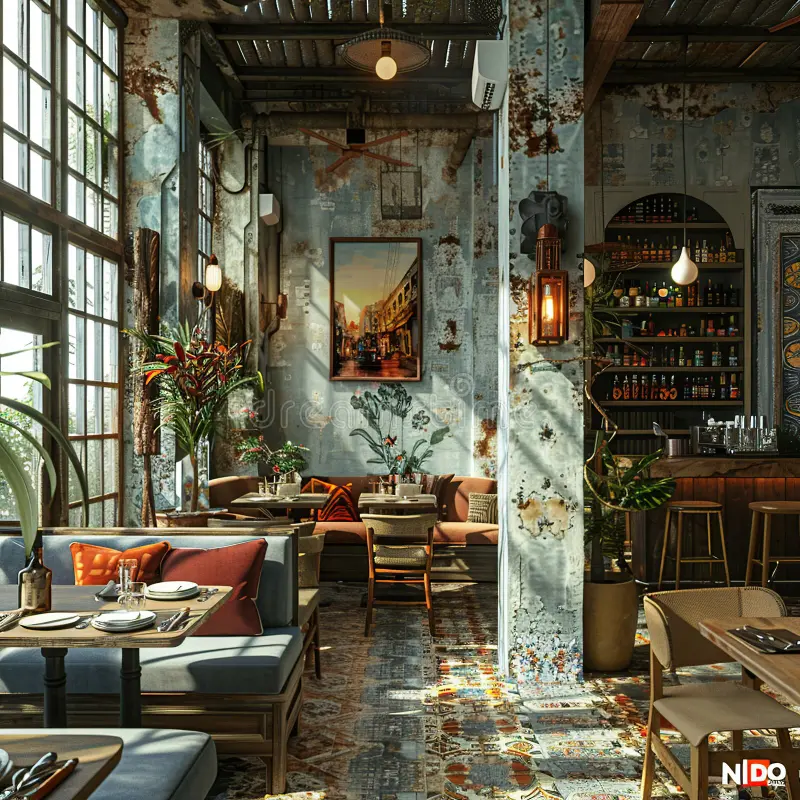

Welcome to Bryan's Café
Fresh meals, quality coffee and friendly service across Sydney.
View MenuAbout Bryan's Café
Bryan's Café is a welcoming local café offering fresh meals, beverages and comfortable spaces for customers to relax, meet friends or enjoy a quick lunch. Our team focuses on quality ingredients, simple service and a warm customer experience.

Our History
Founded with passion for quality food and coffee, Bryan’s Café has grown into a trusted place for locals and visitors across Sydney.